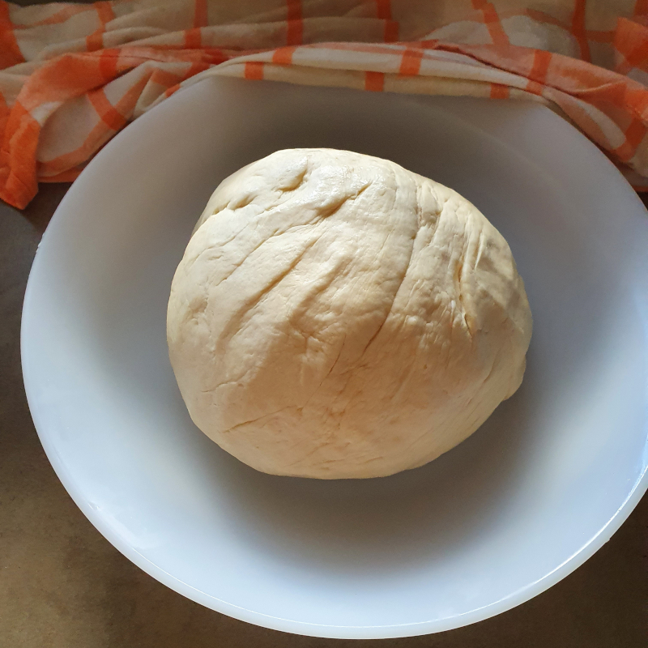

Recepta de Pizza Casolana

Ingredients
- 250g de farina
- 150ml d'aigua tèbia
- 7g de llevadura seca de forner (o 12g de fresca)
- 1 culleradeta de sal
- 1 cullerada d'oli
- Salsa de tomàquet
- 1/2 ceba tallada fina
- 100g de bacon a tires
- 100g de xampinyons
- Olives negres
- 100g mozzarella rallada
- Orenga
Instruccions
En un bol, barregem l'aigua tèbia amb la llevadura i deixem reposar cinc minuts perquè s'activi. Després, afegim la farina, la sal i l'oli i amassem fins que la massa estigui suau i elàstica. Fem una bola amb la massa i la tapem amb un drap humit. La deixem reposar fins que dobli el volum (mínim 1 hora).
Caramelitzem la ceba tallada en làmines fines a foc lent. Tallem el baicon a quadrats i laminem els xampinyons.
Quan hagi llevat la massa, l'estirem i la posem sobre un paper de forn. Li podem donar forma rodona o rectangular. Untem la massa amb el tomàquet fregit. Repartim la ceba, el baicon i els xampinyons i decorem amb les olives negres. Cobrim amb la mozzarella i escampem orenga per sobre.
Amb el forn preescalfat a 220ºC, amb aire i foc a sota, coem la pizza durant uns 10 minuts.
Si vols que la massa et quedi cruixent has d'utilitzar una pedra de forn.
Cal calentar la pedra uns 30' a 400ºC abans de posar-hi la pizza.
Galeria d'imatges
-

-

-

Vídeo
En el següent video d'aficionats a la cuina podem veure un altra recepta de com preparar una deliciosa pizza.